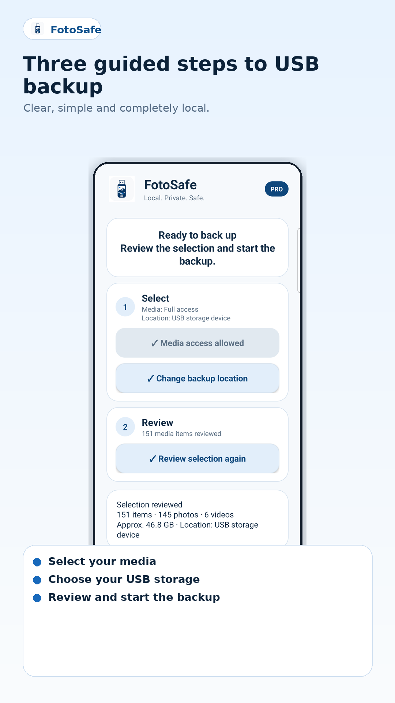
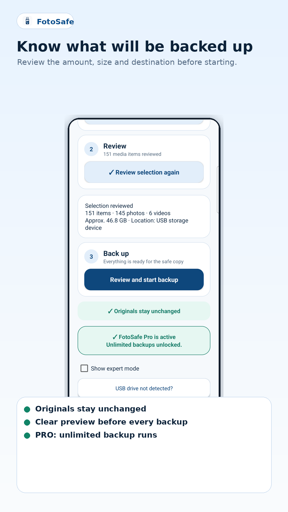
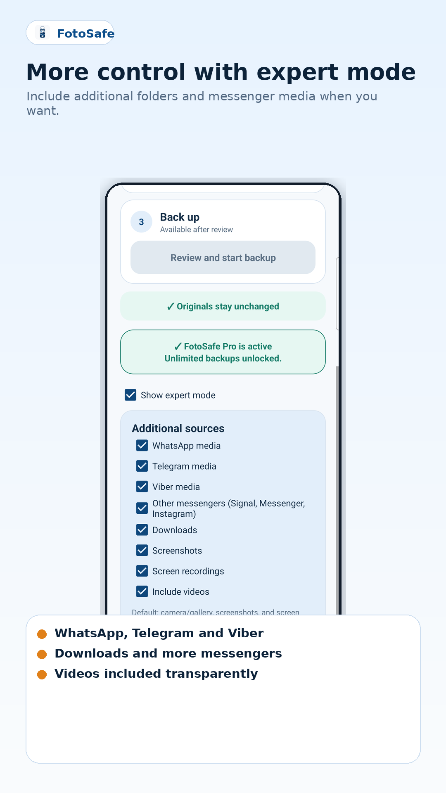

USB
Local backup
Photos and videos are copied to a USB or storage destination selected by the user.
FotoSafe guides you step by step through a local Android backup to a USB drive or storage folder — without a media cloud, a FotoSafe account or deleting the originals. One successful run with up to 100 media files is free; Pro is a one-time purchase with no subscription.
FotoSafe 0.17.2 has been released in closed Google Play testing. Production access is currently under review by Google.

A simple additional backup for people who do not want their memories to exist only in the cloud.
Photos and videos are copied to a USB or storage destination selected by the user.
FotoSafe only copies files. It does not delete any original files from the phone.
Files that have already been backed up are skipped, making a second run faster.
Captured on a Samsung S23: guided setup, a clear preview and optional additional sources.
Guided setup with a USB storage device and a reminder that originals remain on the phone.

Before starting, FotoSafe shows new and previously backed-up media and the amount of data.

Optional sources for messaging apps, downloads, screenshots and videos.
The FotoSafe app does not upload photos or videos and has no FotoSafe account, advertising, tracking, or analytics/crash SDKs. Only this website may load privacy-conscious statistics after voluntary consent. The optional Pro purchase is handled by Google Play.
The Privacy Policy, Data Safety form, Photo and Video Permissions Declaration, Foreground Service Declaration and current DE/EN store assets are maintained.
| App | FotoSafe |
|---|---|
| Package name | at.weidi.fotobackup |
| Version | 0.17.2 / Version Code 34 |
| Platform | Android 9+ / Target SDK 36 / Kotlin / native Android |
| Support | Help and contact |
| Tests | 108 JVM tests; real-device checks including a Samsung S23 and Galaxy A53 running Android 16 / API 36 |
| Play status | 0.17.2 in closed testing · production access under review |
FotoSafe needs to read photos and videos locally in order to copy them to the selected destination.
Android requires external storage to be selected through the system file picker. FotoSafe then writes to /FotoSafe/. Go to the illustrated guide
No. The backup runs locally on the device and the selected storage destination.
One successful run with up to 100 media files is free. Unlimited backup runs are unlocked with the one-time FotoSafe Pro purchase through Google Play. No subscription.
Android may limit long-running background operations. Files already copied remain intact and are skipped during the next run.
A backup may remain incomplete if the battery, device, Android, cable, adapter or USB drive fails during the backup. Please charge the phone sufficiently, do not disconnect the USB drive and check the result.
FotoSafe is an additional backup. Please keep important photos elsewhere too and only delete originals after checking the copies on the USB drive.
FotoSafe is developed with care, but cannot guarantee that every backup will be completed fully and without errors on every device, Android system, cable, adapter or USB drive. You use it at your own responsibility. Please check important backups on the destination medium and keep at least one additional copy of your important photos and videos.